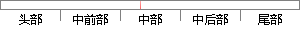

这里将产生一个200维的词向量。
片段位置图

相似结果|
相似片段 1：计算出来，只须求得高维特征空间中两个向量的点积。通过引入核函数尼(x，y)=(m(x)，①(y))就避免了执行非线性映射和在特征空间计算向量的点积的问题【53】。这里定义一个H×日维的核矩阵K【KL=巧
相似片段 2：公式(4-1)至(4-5)。 同样采用 3.5.1 节产生的仿真数据，并任意选择其中一导仿真数据进行预测，这里选择 ， ，其中前 800个点作为训练集，后 200个点作为预测集。选择高斯函数作为核函数
相似片段 3：一种分析层叠滤波器体系的重要理论工具．假设有这样一个实数抽样序列X(1)，X(2)，···，X(N)，组成向量x一[X(1)，?，X(N)]，这里X(i)∈Q，并且Q一{一M，?，o，?，M)，不同于
相似片段 4：。Ongsritrakul和 Soonthronphisaj[32]则将多层感知器、决策树和支持向量机等方法融合，用于预测金价走势。 另外一个与生产生活相关的领域——电力负载预测方面的研究也吸引了一些
相似片段 5：，一个方法又可以在向量空同中用一个方法向量来表示(定义2)。这样，给定一个服务集D，P和峰为D中所有方法集及方法向量集，那么：la IdP=M”．-峰。旦耐t (8)这里，％．={叩】，口p2，?，叩
相似片段 6：，每一次处理都产生一个结果。向量处理器具有如下特点：一条向量指令等价于执行一个完整的循环，每一条向量指令表示成百上千的操作，这样用于保持深度流水线忙时所需的取值和译7ORl200向量处理器的设计
相似片段 7：的形式【3]为叫n胪一AzI|一 (1．2)即哑n；(6一Ax)TD。(6一A。) (1．3)这里D是一个对称正定矩阵。在这里我们假定A∈叼“且m≥n，我们令余向量Y=D_1(b—Ax)，那么解加权最小
相似片段 8：??? ?? ?? ?? ? (2-14) 对于式(2-14)，其中任何一个原子函数都会通过相应的窗函数进行计算，这里的窗函数一般都具有高斯性质，最终产生的原子形式为 2( ) tg t e ??? ，而其中存在一个由多个参数哈尔滨工程
相似片段 9：‰=span{ro，哦”．，A州ro}的一组正交规范基V二，并在此空间内获得对精确解的逼近，即：x册=xo+v．r这里，m代表Krylov子空间的维数。Y是一个长度为m复向量，．其取值要能保证当前迭代余量r
|
※ 片段修改建议 ※
近似词参考：- 产生：发生 孕育发生
系统自动生成语句：这里将发生一个200维的词向量。
注：本片段修改建议为系统自动生成，仅供参考。